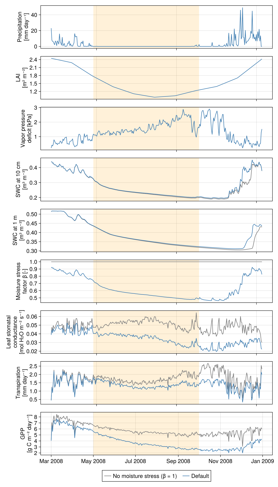
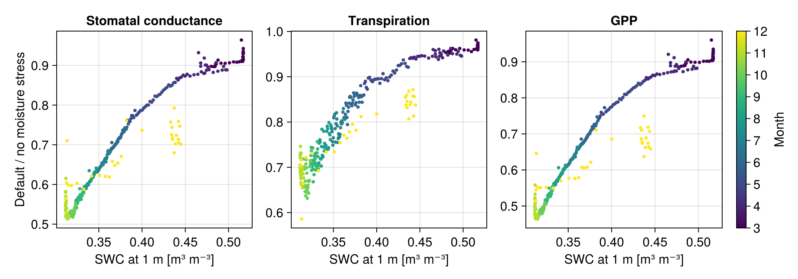

ERA5-forced single column simulations with the full land model
In the FLUXNET tutorial, we ran the full land model (snow, soil, canopy) in a single column, forced by meteorological observations from a flux tower. Flux towers only exist at a few hundred locations, however. In this tutorial we instead force a single column with the ERA5 reanalysis Hersbach et al. [18], which lets us run ClimaLand anywhere on land.
We run at a site in the Brazilian Cerrado, a tropical savanna with a pronounced dry season: almost no rain falls between May and September, while the air stays warm all year. This makes it a good place to see how soil water controls the vegetation. As the soil dries, stomata close, and both transpiration and gross primary productivity (GPP) decline. To isolate this effect from other seasonal changes (leaf area, sunlight), we compare the default model to a version of it in which the vegetation never feels water stress.
As in the FLUXNET tutorial, the default parameterizations and parameters are used. See the snowy land parameterizations tutorial to learn how to change them.
Preliminary Setup
using Dates
import ClimaComms
ClimaComms.@import_required_backends
using ClimaDiagnostics
using ClimaLand
using ClimaLand.Domains: Column, obtain_surface_domain
using ClimaLand.Simulations
import ClimaLand.Canopy as Canopy
import ClimaLand.Parameters as LP
import ClimaUtilities.TimeManager: date
using CairoMakieDefine the floating point precision and get the parameter set holding constants used across CliMA models.
const FT = Float64;
toml_dict = LP.create_toml_dict(FT);Choose the location (longitude and latitude, in degrees), the simulation period, and the timestep (in seconds).
long, lat = FT(-47.9), FT(-15.8)
start_date = DateTime(2008, 1, 1)
stop_date = DateTime(2009, 1, 1)
Δt = 900.0;Domain
We use a 15 m deep column with 15 layers, whose thickness increases from 5 cm at the surface to 3 m at the bottom. The longitude and latitude are used to look up spatially varying default parameters at this location, such as the soil hydraulic parameters and the plant functional types.
domain = Column(;
zlim = (FT(-15), FT(0)),
nelements = 15,
dz_tuple = (FT(3), FT(0.05)),
longlat = (long, lat),
);Forcing
The atmospheric and radiative forcing come from ERA5. Here we use a low-resolution version (8° × 8°, hourly) of the 2008 ERA5 data, which is small enough to download when building this documentation; the forcing at the column is interpolated from the surrounding grid points. For research runs, set use_lowres_forcing = false to use the 1° × 1° data covering 1979-2024, which is available on the CliMA clusters. The leaf area index (LAI) is prescribed from MODIS observations at the site. We wrap both in a function because we will need them twice.
function era5_forcing_and_modis_lai()
forcing = ClimaLand.prescribed_forcing_era5(
start_date,
stop_date,
domain.space.surface,
toml_dict,
FT;
use_lowres_forcing = true,
max_wind_speed = 25.0,
)
LAI = ClimaLand.Canopy.prescribed_lai_modis(
domain.space.surface,
start_date,
stop_date,
)
return forcing, LAI
end;Setup and run the integrated model
The LandModel couples the soil, snow, and canopy models. By default, soil water limits photosynthesis through a soil moisture stress factor $β$ Egea et al. [26]: $β$ is 1 in wet soil and decreases towards 0 as the soil in the root zone dries. A lower $β$ reduces the photosynthetic capacity of the leaves, and stomatal conductance, which is coupled to photosynthesis, decreases with it.
forcing, LAI = era5_forcing_and_modis_lai()
land_model = LandModel{FT}(forcing, LAI, toml_dict, domain, Δt);We save daily averages of the variables we want to plot in memory: precipitation (precip), leaf area index (lai), the vapor pressure deficit of the air (vpd), soil water content (swc), the moisture stress factor (msf), stomatal conductance (gs), transpiration (trans), and GPP (gpp). The initial conditions are read by default from a spun-up global simulation.
output_vars = ["precip", "lai", "vpd", "swc", "msf", "gs", "trans", "gpp"]
function run_simulation(model)
diagnostics = ClimaLand.default_diagnostics(
model,
start_date;
output_writer = ClimaDiagnostics.Writers.DictWriter(),
output_vars,
reduction_period = :daily,
)
simulation = LandSimulation(
start_date,
stop_date,
Δt,
model;
user_callbacks = (),
diagnostics,
)
solve!(simulation)
return simulation
end
simulation = run_simulation(land_model);A model without moisture stress
For comparison, we build a second model that is identical except that it uses the NoMoistureStressModel, for which $β = 1$ at all times. To do so, we construct its canopy model ourselves and pass it to the LandModel. The canopy is coupled to the prognostic soil and snow through PrognosticGroundConditions, and its prognostic land components must match those of the LandModel. Since solve! closes all open NetCDF files when the simulation ends, we create the forcing and LAI again.
forcing, LAI = era5_forcing_and_modis_lai()
canopy_no_stress = Canopy.CanopyModel{FT}(
obtain_surface_domain(domain),
(;
atmos = forcing.atmos,
radiation = forcing.radiation,
ground = ClimaLand.PrognosticGroundConditions{FT}(),
),
LAI,
toml_dict;
prognostic_land_components = (:canopy, :snow, :soil),
soil_moisture_stress = Canopy.NoMoistureStressModel{FT}(),
);
land_model_no_stress = LandModel{FT}(
forcing,
LAI,
toml_dict,
domain,
Δt;
canopy = canopy_no_stress,
);
simulation_no_stress = run_simulation(land_model_no_stress);Plotting results
We extract the daily time series from the diagnostics, and convert them to more familiar units: precipitation and transpiration from kg m⁻² s⁻¹ to mm day⁻¹, the vapor pressure deficit from Pa to kPa, and GPP from mol CO₂ m⁻² s⁻¹ to g C m⁻² day⁻¹. Soil water content is resolved in depth; we keep the layers centered near 10 cm and 1 m below the surface. Note that in ClimaLand, precipitation is negative (downward), and that each daily average is timestamped at the end of its day.
z = vec(parent(domain.fields.z))
layer_10cm = argmin(abs.(z .+ 0.1))
layer_1m = argmin(abs.(z .+ 1.0))
seconds_per_day = 86400
Pa_per_kPa = 1000
g_C_per_mol_CO2 = 12
function get_daily_series(simulation)
writer = simulation.diagnostics[1].output_writer
series(short_name; layer = nothing) =
ClimaLand.Diagnostics.diagnostic_as_vectors(
writer,
"$(short_name)_1d_average";
layer,
)
times, precip = series("precip")
return (;
dates = date.(times) .- Day(1),
precip = -precip .* seconds_per_day,
lai = series("lai")[2],
vpd = series("vpd")[2] ./ Pa_per_kPa,
swc_10cm = series("swc"; layer = layer_10cm)[2],
swc_1m = series("swc"; layer = layer_1m)[2],
β = series("msf")[2],
gs = series("gs")[2],
trans = series("trans")[2] .* seconds_per_day,
gpp = series("gpp")[2] .* g_C_per_mol_CO2 .* seconds_per_day,
)
end
stress = get_daily_series(simulation)
no_stress = get_daily_series(simulation_no_stress);The photosynthetic capacity of the leaves acclimates to the environment over about a month. It starts from an idealized initial value, so we treat the first two months as a spin-up period and only plot the results after it.
spinup_date = DateTime(2008, 3, 1)
keep = stress.dates .>= spinup_date
dates = datetime2unix.(stress.dates[keep]);Plot the time series of both simulations, shading the dry season. The precipitation, LAI, and vapor pressure deficit are prescribed, so they are the same in both.
dry_season_start = DateTime(2008, 5, 1)
dry_season_end = DateTime(2008, 10, 1)
fig = Figure(size = (800, 1400), fontsize = 16)
panels = [
("Precipitation\n[mm day⁻¹]", :precip),
("LAI\n[m² m⁻²]", :lai),
("Vapor pressure\ndeficit [kPa]", :vpd),
("SWC at 10 cm\n[m³ m⁻³]", :swc_10cm),
("SWC at 1 m\n[m³ m⁻³]", :swc_1m),
("Moisture stress\nfactor β [-]", :β),
("Leaf stomatal\nconductance\n[mol H₂O m⁻² s⁻¹]", :gs),
("Transpiration\n[mm day⁻¹]", :trans),
("GPP\n[g C m⁻² day⁻¹]", :gpp),
]
axes = map(enumerate(panels)) do (i, (ylabel, name))
ax = Axis(fig[i, 1]; ylabel, xticklabelsvisible = i == length(panels))
vspan!(
ax,
datetime2unix(dry_season_start),
datetime2unix(dry_season_end);
color = (:orange, 0.15),
)
if name ∉ (:precip, :lai, :vpd)
lines!(
ax,
dates,
getproperty(no_stress, name)[keep];
color = :gray,
label = "No moisture stress (β = 1)",
)
end
lines!(
ax,
dates,
getproperty(stress, name)[keep];
color = :steelblue,
label = "Default",
)
ax
end
linkxaxes!(axes...)
month_starts = spinup_date:Month(2):stop_date
axes[end].xticks =
(datetime2unix.(month_starts), Dates.format.(month_starts, "u yyyy"))
Legend(fig[length(panels) + 1, 1], axes[4]; orientation = :horizontal)
save("era5_cerrado_timeseries.png", fig);
The leaf area is largest in the wet season and smallest in July and August, and it starts to increase again in late August, before the rain returns, as the Cerrado vegetation grows new leaves. The stomatal conductance shown is per unit leaf area: in a sparser canopy, each leaf receives more sunlight, so without moisture stress the leaf conductance is highest in the middle of the dry season, when the leaf area is smallest.
In the default model, once the rain stops at the start of the dry season (shaded), the soil dries out, first near the surface and then deeper in the root zone. The moisture stress factor $β$ falls, and stomatal conductance, transpiration, and GPP drop well below their unstressed values. Transpiration increases again in the second half of the dry season, even though $β$ and the leaf conductance are still decreasing: the vapor pressure deficit rises as the air becomes hotter and drier, which increases the evaporative demand. From late August, the leaf area grows as well. Without moisture stress, the vegetation keeps transpiring, so its soil is slightly drier at the end of the dry season and takes longer to rewet once the rain returns.
To see the relationship directly, we plot the ratio of each variable in the default simulation to its unstressed value against the soil water content at 1 m depth. The drier the soil, the more stomatal conductance, transpiration, and GPP are reduced.
fig2 = Figure(size = (1000, 350), fontsize = 16)
month_of_year = month.(stress.dates[keep])
ratio_panels =
[(:gs, "Stomatal conductance"), (:trans, "Transpiration"), (:gpp, "GPP")]
for (i, (name, label)) in enumerate(ratio_panels)
ax = Axis(
fig2[1, i];
title = label,
xlabel = "SWC at 1 m [m³ m⁻³]",
ylabel = i == 1 ? "Default / no moisture stress" : "",
)
ratio =
getproperty(stress, name)[keep] ./ getproperty(no_stress, name)[keep]
scatter!(
ax,
stress.swc_1m[keep],
ratio;
color = month_of_year,
colormap = :viridis,
colorrange = (3, 12),
markersize = 6,
)
end
Colorbar(
fig2[1, 4];
colormap = :viridis,
limits = (3, 12),
label = "Month",
ticks = 3:12,
)
save("era5_cerrado_stress_ratio.png", fig2);
The points from the end of the year (yellow) fall below the dry-down curve: after the rain returns, $β$ recovers within days, but the photosynthetic capacity of the leaves re-acclimates over about a month, so stomatal conductance, transpiration, and GPP lag behind the soil water.
This page was generated using Literate.jl.